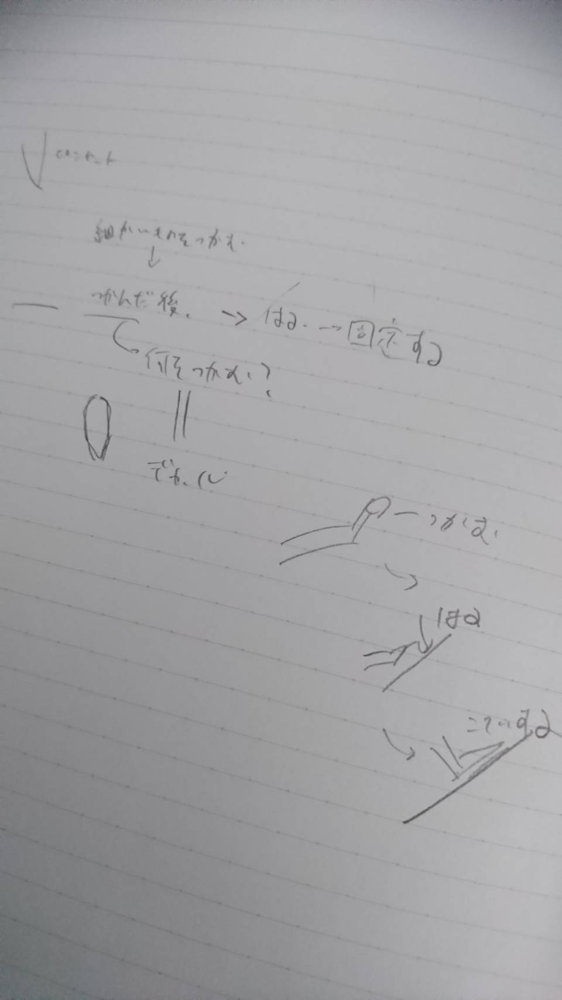
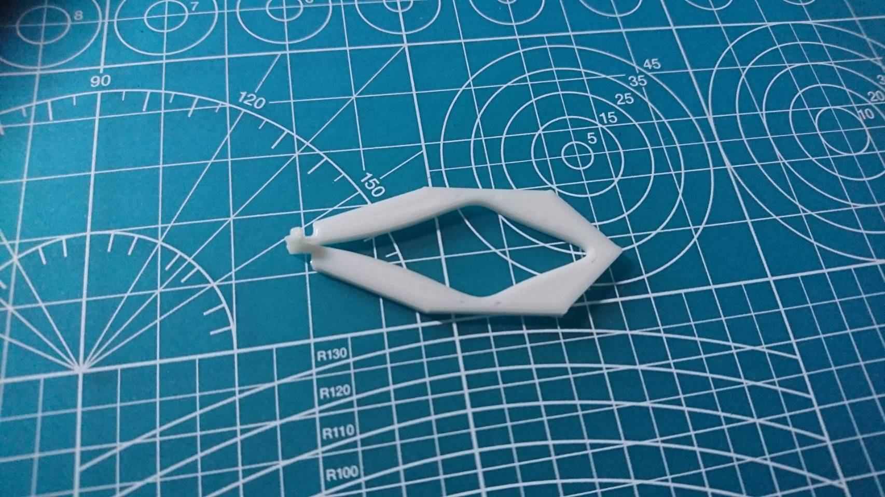
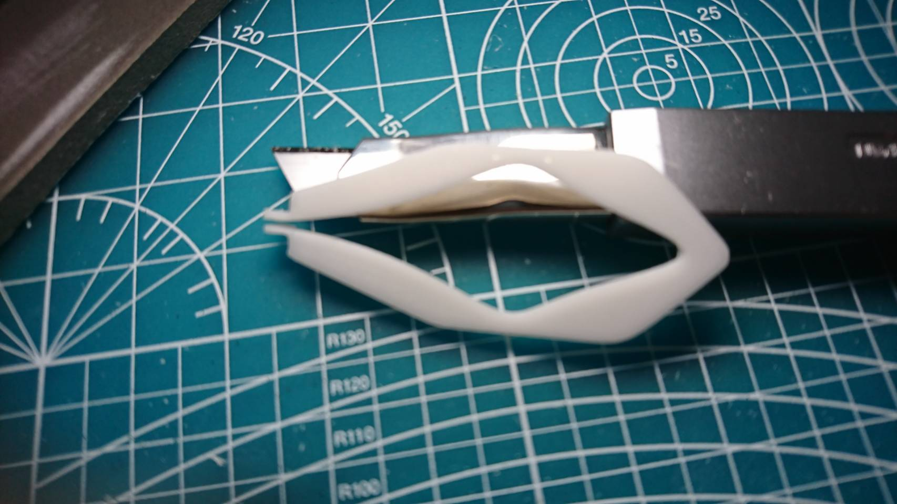

スケッチ

ピンセットを進化させると考えた時、昨今の流行りは一点に特化させることが多いため自分も1つの役割に特化させて見ました。
そこで考えたのはプラモデルのデカールを貼りやすくするピンセット
つかんでから貼って固定するまでを1つのピンセットで出来るように目指しました。
3Dプリント後

画像では見づらいですがピンセットのつかむ部分が溶けてくっついてしまっています。
これではピンセットではないためカッター、ヤスリを用いて修正しました。
完成

つまむ部分をカッターで切り離しヤスリで幅を広げました。
ついてで周りも角ばっていたのをヤスリがけして丸みを持たせました。
使用感
さっそく使ってみると、、、
開いたり閉じたりが若干大変なのに加えて、貼り付けるプラモデル側と材質が一緒なので傷がつかないか少し不安になった。
しかし、溶けてくっついてしまうほどつまむ部分を補足したおかげかだいぶ使いやすかった。
材質やしなり感などを変えられれば実用性の高いものに出来ると思った。
ピンセットのstlファイル